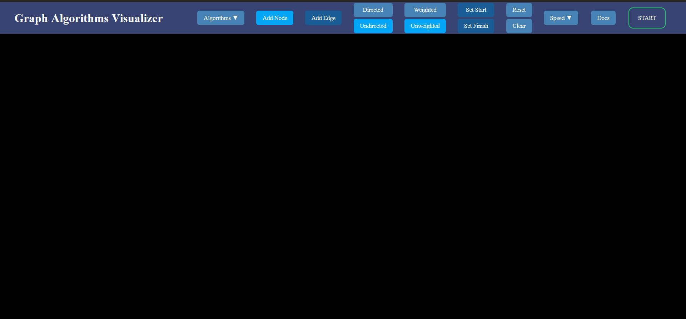
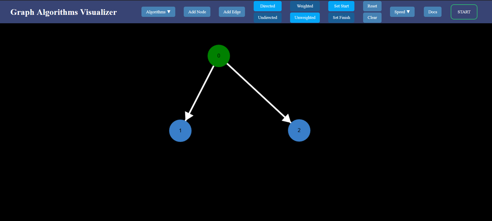

Welcome to the Graph Algorithms Visualizer. This document will walk you navigate the various commandds and give
a summary of each algorithm that is offered. Lets begin.

Start by selecting an algorithm. Click on the algorithms dropdown to show the available algorithms you can
select.
Next place a node. Click on the Add Node button, then click anywhere in the canvas.
When two nodes are present you can place an edge. Click on a node as the starting point, then click on a
different node as the end point.
Placing a directed edge is the same as placing an unweighted edge as shown.
For a weighted edge the canvas will prompt you for a weight or flow capacity. Type in a weight or flow capacity
in the red input field shown. While the input field is red do not press any buttons, nodes, edges, nor anything
for that matter. Press enter to submit. The input field will turn white upon successful submission.
Depending on the graph you many need to select a start and/or an end node. To select a start node select Set
Start, then click on any node. The start node is highlighted as green. To select an end node select
Set End, then click on any node. The end node is highlighted as red. If a node is the start and
end node it will be highlighted yellow.

Once you are satisfied with your graph select a speed. This toggles the speed that the visualizer will run
through the algorithm. For algorithms with very long run times like the Floyd-Warshall algorithm you can
disable visualization by selecting Display Off.
Press Start and watch the algorithm run through your graph.
Nodes are color coded for various situations.
The Depth First Search algorithm is a graph traversal algorithm. This algorithm works on directed/undirected and weighted/unweighted graphs. Weight is irrelevant for this algorithm so you will not be given the option to create weighted graphs. The algorithm will traverse through the graph and backtracks upon a dead end. The visualizer will highlight nodes currently being searched in orange and backtracked nodes as gray.
The Breadth First Search algorithm is a graph traversal algorithm. This algorithm also works on undirected and weighted/unweighted graphs. Weight is irrelevant for this algorithm so you will not be given the option to create weigted graphs. This algorithm will search through each layer of nodes by level.
Dijkstra's algorithm is a single shortest path algorithm. This algorithm works on directed/undirected and weighted graphs. This algorithm will return the path of minimal cost from the start node to the end node. This algorithm is limited to positive edge weights. The edges will be highlighted in green color.
The Bellman-Ford algorithm is an algorithm that find the shortest path in a graph. The algorithm works on directed and weighted graphs. This algorithm will return the path of minimal cost from the start node to the end node. Unlike Dijkstra's algorithm the Bellman-Ford algorithm is compatible on graphs with negative edge weights. This algorithm will not return an output if the graph contains negative cycles.
The Floyd-Warshall algorithm is an all-pairs shortest-path algorithm. This algorithm works on directed and weighted graphs. This algorithm will return the path of minimal cost for all pairs of nodes. It is not possible to display every possible shortest path so this tool will only display one shortest path of your choice. The Floyd-Warshall algorithm is compatible on graphs with negative edge weights. This algorithm will not return an output if the graph contains negative cycles.
An edge in an undirected connected graph is a bridge iff removing it disconnects the graph. For a disconnected undirected graph, definition is similar, a bridge is an edge removing which increases number of disconnected components. vertex in an undirected connected graph is an articulation point (or cut vertex) iff removing it (and edges through it) disconnects the graph. Articulation points represent vulnerabilities in a connected network – single points whose failure would split the network into 2 or more components. They are useful for designing reliable networks. This algorithm finds bridges and articulation points in a graph. This algorithm works on undirected and unweighted graphs. It will highlight any bridges and articulation points in red.
A directed graph is strongly connected if there is a path between all pairs of vertices. A strongly connected component (SCC) of a directed graph is a maximal strongly connected subgraph.In computer science, Kosaraju-Sharir's algorithm (also known as Kosaraju's algorithm) is a linear time algorithm to find the strongly connected components of a directed graph. Kosaraju will color code each strongly connected component in a random color.
Like Kruskal’s algorithm, Prim’s algorithm is also a Greedy algorithm. It starts with an empty spanning tree. The idea is to maintain two sets of vertices. The first set contains the vertices already included in the MST, the other set contains the vertices not yet included. At every step, it considers all the edges that connect the two sets, and picks the minimum weight edge from these edges. After picking the edge, it moves the other endpoint of the edge to the set containing MST. This algorithm will highlight the edges part of the minimum spanning tree green. This algorithm will highlight the edges part of the minimum spanning tree green.
Given a graph which represents a flow network where every edge has a capacity. Also given two vertices source ‘s’ and sink ‘t’ in the graph, find the maximum possible flow from s to t with following constraints: a) Flow on an edge doesn’t exceed the given capacity of the edge. b) Incoming flow is equal to outgoing flow for every vertex except s and t. The idea of Edmonds-Karp is to use BFS in Ford Fulkerson implementation as BFS always picks a path with minimum number of edges. When BFS is used, the worst case time complexity can be reduced to O(VE^2).
Kruskal's algorithm initially places all the nodes of the original graph isolated from each other, to form a forest of single node trees, and then gradually merges these trees, combining at each iteration any two of all the trees with some edge of the original graph. Before the execution of the algorithm, all edges are sorted by weight (in non-decreasing order). Then begins the process of unification: pick all edges from the first to the last (in sorted order), and if the ends of the currently picked edge belong to different subtrees, these subtrees are combined, and the edge is added to the answer. After iterating through all the edges, all the vertices will belong to the same sub-tree, and we will get the answer. This algorithm will highlight the edges part of the minimum spanning tree green.